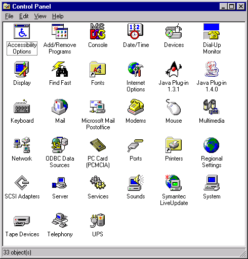

This chapter includes the following topics:
CLSIDSo that multiple JRE versions may be deployed in the same environment, every
new or patch release of Java Plug-in uniquely identifies registry keys, CLSID,
MIME type and other resources.
Notes: (1) For an explanation of product
version numbers, see the note in the
section called "Using OBJECT, EMBED and
APPLET Tags in Java Plug-in." In this section, a mix
of version 1.3 and 1.4 examples is given. (2) While the examples below
are for Windows, multi-version support also applies to Solaris and Linux. |
CLSIDThere is a unique CLSID for every new/patch version of Java Plug-in. (CLSID
is used in the OBJECT tag with Internet Explorer running on Windows.)
If you want a particular version of Java Plug-in to be used, then specify this
unique CLSID in the OBJECT tag. The CLSID
is stored in the registry in:
HKEY_CLASSES_ROOT\CLSID\
In general the CLSID looks as follows:
CAFEEFAC-<major version>-<minor version>-<patch
version>-ABCDEFFEDCBA
where major version, minor version
and patch version are all 4-digit hexadecimal numbers for
the Java Plug-in/JRE release.
For example, the CLSID for Java Plug-in 1.4 is:
CAFEEFAC-0014-0000-0000-ABCDEFFEDCBA
and you would find this in the registry:
HKEY_CLASSES_ROOT\CLSID\CAFEEFAC-0014-0000-0000-ABCDEFFEDCBA
The CLSID for 1.3.0_03 is:
CAFEEFAC-0013-0000-0003-ABCDEFFEDCBA
and you would find this in the registry:
HKEY_CLASSES_ROOT\CLSID\CAFEEFAC-0013-0000-0003-ABCDEFFEDCBA
Note that CLSID is also stored in:
HKEY_LOCAL_MACHINE\SOFTWARE\Microsoft\Code Store Database\Distribution Units\
There is a unique MIME type and NP*.dll for every new/patch version
of Java Plug-in. (MIME type is used in the EMBED tag with Netscape
and as a PARM in the OBJECT tag for Internet Explorer.
NP*.dll is unique to Netscape.) If you want to use a particular
version of Java Plug-in with Netscape, specify the unique MIME type in the EMBED
tag.
Note that this MIME type will be supported by an NP*.dll with
a unique name for every new/patch version. Thus, installing different version
of Java Plug-in does not overwrite other .dll files in Navigator's
Plugins directory.
In general MIME type looks like this:
application/x-java-applet;jpi-version=<version>
where version includes the major, minor and patch version
numbers.
The MIME type for the 1.4 release is:
application/x-java-applet;jpi-version=1.4
The MIME type for the 1.3.0_03 release is:
application/x-java-applet;jpi-version=1.3.0_03
MIME type is supported in the file
NPJPI<modified version
number>.dll
For Java Plug-in 1.4.0_01, the unique MIME type would be:
application/x-java-applet;jpi-version=1.4.0_01
and it would be supported in the file:
NPJPI140_01.dll
in Navigator's Plugins directory.
NotePrior to release 1.4.0, the supporting .dll file was of the form |
There is a unique Java Plug-in registry key for every new/patch version of Java Plug-in. The main Java Plug-in registry key is:
HKEY_LOCAL_MACHINE\Software\JavaSoft\Java Plug-in\<version number>
where the <version number> will include the major, minor and the patch version numbers.
Example:For Java Plug-in 1.4 you will find the following in your registry:
HKEY_LOCAL_MACHINE\Software\JavaSoft\Java Plug-in\1.4.0
As in previous versions, the property file continues to be located in <user.home>\.java. However, the filename will be unique in every new/patch release and have the following form:
<user.home>\.java\properties_<modified version number>
where the <modified version number> will include
the major, minor, and patch version numbers; e.g.,
C:\WINNT\Profiles\stanleyh\.java\properties140_xx
A trace file has been created automatically in <user.home>
when Java Console is enabled. Its purpose is to capture in a single file the
same messages that are displayed in Java Console. But in order to avoid conflict,
this file is now uniquely named in every new/patch release. There is also a
uniquely named log file. These files have the form:
<user.home>\.plugin<modified version number>.trace
<user.home>\.plugin<modified version number>.log
where the <modified version number> includes the
major, minor and the patch version numbers; e.g., .plugin140_xx.trace
There is a unique file name for the Java Plug-in Control Panel dll in every new/patch release. From the Windows Control Panel, this allows the user to launch the Control Panel for a particular version of Java Plug-in. The filename for the dll is of the form:
plugincpl<modified version number>.cpl
where the <modified version number> will include
the major, minor and the patch version numbers; e.g., plugincpl130_01.cpl
Note below that the user can choose which version of the Java Plug-in Control Panel to launch.

There are unique registry keys for every new/patch release of the JRE/JDK. Prior to release 1.3 of Java Plug-in, installating multiple versions of Java Plug-in overwrote the JRE/JDK registry keys. These registry keys are located as follows:
HKEY_LOCAL_MACHINE\Software\JavaSoft\Java Runtime Environment\<version number>
HKEY_LOCAL_MACHINE\Software\JavaSoft\Java Development Kit\<version number>
where the <version number> includes the major, minor
and the patch version numbers; e.g., 1.3.0_01
These keys allow Java Plug-in to locate the proper version of JRE/JDK.